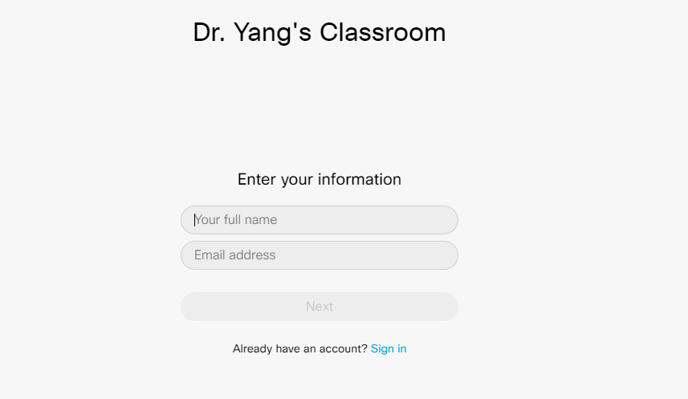

How to Use Cisco Webex to Attend Online Class¶
Install Cisco Webex¶
Log in your WTClass, go to our course. You will see Online Classroom section on the left. Click this link and you will see the following page (The title will be different depending on your course). Follow the instruction to install WebEx desktop app.
Log in Webex¶
If you install Webex correctly, now you will see the following window:
Then type your name and Email, click Next button, it will take you to WT Single Sign-On page. Sign in the page, you will see the following page:
Join Meeting¶
Before you click Join meeting button, I suggest you to change the audio option to Call me at, as follows
Type your cell phone number in the blank and click Call me at. Then you will receive a call from Webex, answer it and press 1 on your phone, then you can hear the class. The reason I suggest you to change the audio to phone is that the computer audio depends on the internet connection and sometimes it will be in and out. But the phone will guarantee the quality of voice.
If the passcode is asked to join the meeting, check the announcement in WTClass to find it.
Postscript¶
If you follow the instruction, you should attend the online lecture now. If you still have questions, please feel free to contact me by WT Email.